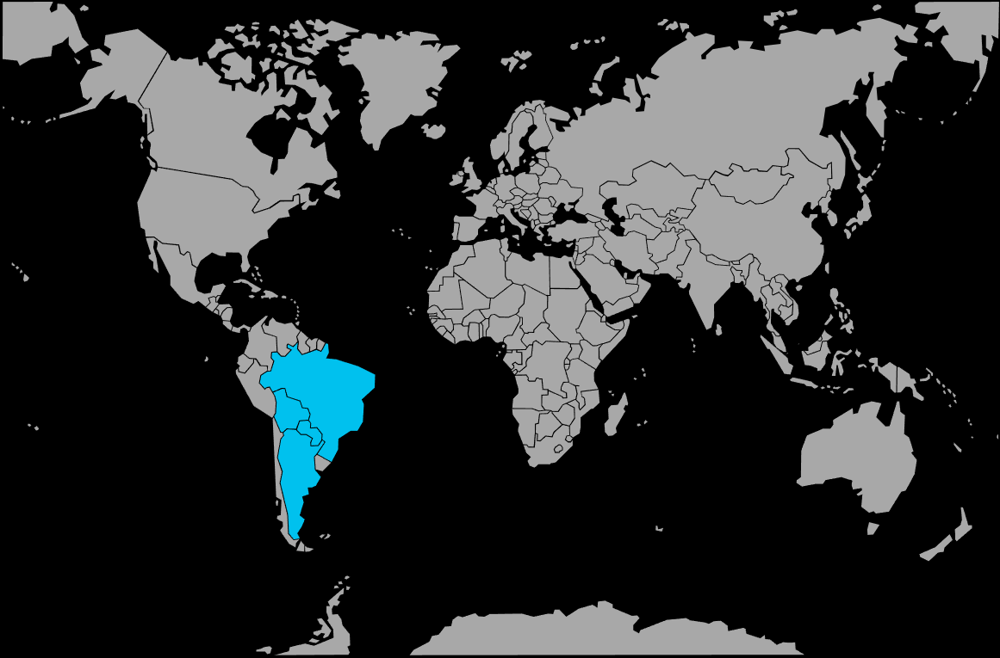

Systématique
- Ordre : Characiformes
- Famille : Characidae
- Genre : Gymnocorymbus
- Espèce : Gymnocorymbus ternetzi
Gymnocorymbus ternetzi, le tétra veuve noire, est un petit characidé sud‑américain très répandu en aquariophilie, apprécié pour sa silhouette haute et ses deux bandes verticales sombres sur fond argenté.
Il atteint en général 4–5 cm en aquarium et vit en bancs, occupant surtout la zone médiane, parfois la zone supérieure; c’est une espèce robuste, bien adaptée aux bacs communautaires calmes.
Gymnocorymbus ternetzi forme des bancs dynamiques qui se déplacent en permanence dans la zone médiane; un groupe d’au moins 8–10 individus est indispensable pour diluer l’agressivité et limiter le pincement de nageoires envers les poissons à longues voiles.
Globalement pacifique mais vif, il apprécie un décor combinant une grande zone de nage dégagée et des zones d’ombre créées par les plantes et les racines, ce qui réduit le stress et favorise un comportement naturel.
Mode : ponte libre; les œufs sont dispersés parmi les plantes fines ou les mops de ponte et ne reçoivent aucun soin parental, les adultes les consommant volontiers.
Pour l’élevage, on utilise généralement un bac spécifique avec plantes ou mops, un couple ou un petit groupe de reproducteurs, puis on retire les adultes après la ponte pour laisser éclore et grandir les alevins.
Dimorphisme sexuel : les femelles sont plus rondes et trapues, surtout en période de ponte, tandis que les mâles sont un peu plus sveltes avec une nageoire anale légèrement plus effilée.
Biotope : petits affluents, ruisseaux et zones calmes de rivières subtropicales, aux eaux lentes ou stagnantes, peu profondes, bien végétalisées et souvent légèrement teintées.
Répartition
Origine naturelle :
- Bassins du rio Paraguay et du rio Guaporé, principalement dans la région du Pantanal, du Brésil jusqu’au Paraguay et au nord de l’Argentine.
- Présent dans des lagunes, lacs peu profonds, canaux et bras morts associés à ces fleuves.
Il fréquente des eaux lentes, parfois légèrement teintées, avec une végétation aquatique et rivulaire dense offrant de nombreux abris et zones ombragées.
Paramètres de maintenance
Température : 22 à 26 °C (tolérance approximative 20–28 °C).
pH : 6,0 à 7,5, de légèrement acide à neutre.
GH : 3 à 15 °dGH, eau douce à moyennement dure.
Courant : faible à modéré, avec une filtration douce assurant une bonne qualité d’eau sans courant trop fort.
Volume conseillé : au minimum 80–100 L pour un banc d’au moins 8–10 individus, avec une façade suffisante pour la nage en groupe.
Régime alimentaire
Régime : omnivore; accepte facilement flocons, granulés fins, ainsi que nourriture vivante et congelée (daphnies, artémias, petites larves).
Une alimentation variée, incluant une petite part végétale, favorise de belles couleurs et une bonne condition générale.